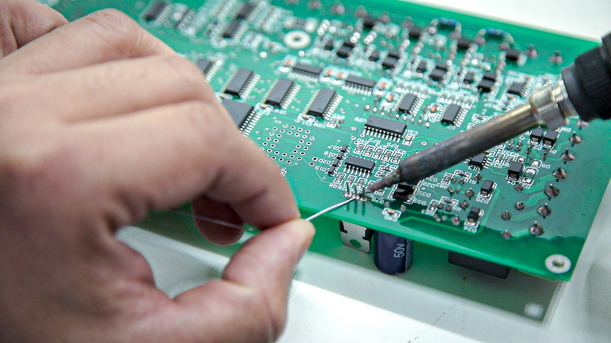

Skills
IT Skills:
|  |

|
|
SolderingI've gained practical skills in soldering in highschool and my home-projects, replacing microchips and small components. So im not only able to maintain but even repair electronic devices. |
NetworkingI have a solid understanding of IPv4, assigning permanent ip adresses, dhcp servers, masks, gateways, whitelisting. Same with network infrastructure thanks to my education in Highschool. |
WindowsAs a child i was allways curious about the settings and how windows works so as i got older, i can easely operate windows 7/10 and 11, manage it, set it up, and script in shell to automate annoying tasks. I heavely preffer to work on Windows 10 as its my main choice of OS. |
Software:
|
|
|
|
Ms OfficeSince it is mandatory to know how to use Powerpoint, Word, Excell, Outlook in school on competent level to ease my homerwork and class assignments. Im quite proficient in them. |
JiraI played a bit with this software on my own, and watched few videos on how to work with this. I dont find it complicated. |
VS CodeIts my main IDE, i looked at others like vim and atom but i find VS code to be most userfriendly as im still at the begining of my journey. |
|
|
|
|
HTMLAs you can see, i can create solid static websites, I learned this during Highschool and ICT-Academy. |
CSS3I've got a solid understanding of how to write competent style sheets and manage them. |
PythonI was supposed to learn this also in Highschool, but that was too much to ask for, so not only did I self-learn it but also used Boot.dev and ICT-Academies rekvalification course. |
|
|
|
|
GitNot a programming language, but its used with programing. Its a tool i use on daily basis when i code. |
SQLIm just begining to understand this language on a proper profesional working level. |